No Painel de Controle HostNet
1º Ao contratar o serviço de hospedagem de uma empresa, a primeira coisa que você vai pegar é o endereço do Servidor ftp e o endereço do host provisório.
2º Verificar atualização PHP
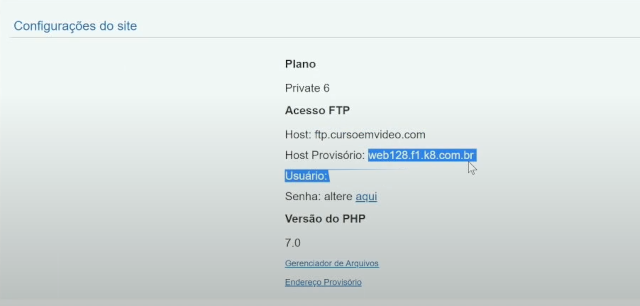
FileZilla
3º Abra o programa FileZilla e insira o Host, Nome de Usuário e Senha.
Assista aula de como baixar FileZilla
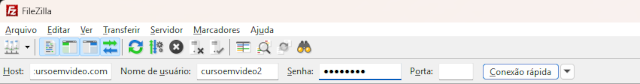
4º Clique em Conexão Rápida e Ok
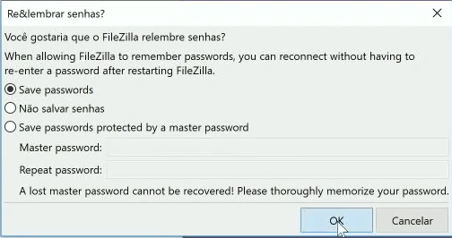
5º Dentro da pasta WWW do Servidor FTP
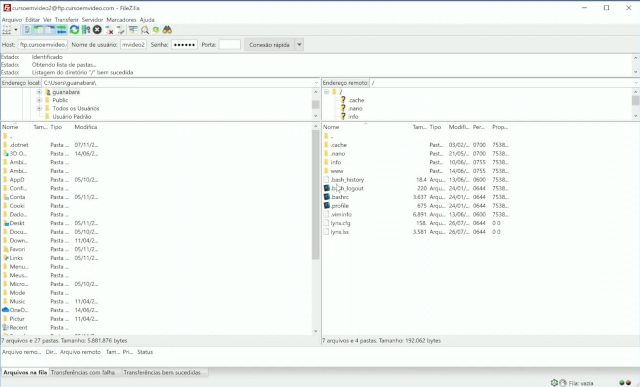
6º Crie uma pasta com o nome de cursowp
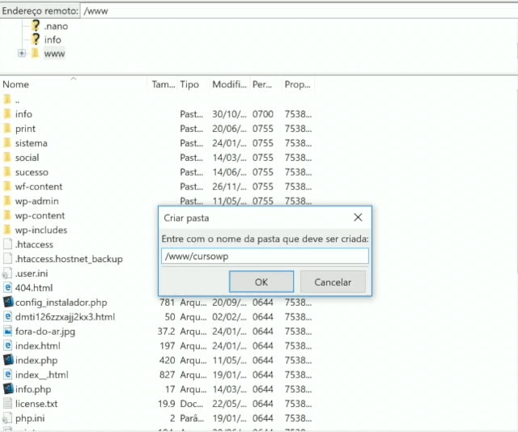
7º Baixe o WordPress: Link de Download
8º Com o arquivo compactado, envio para dentro da pasta cursowp
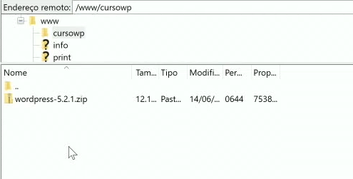
9º Abra o programa PUTTY
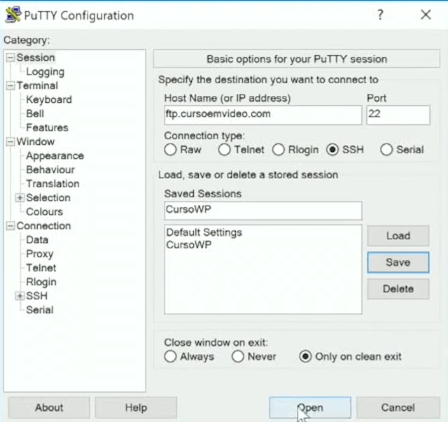
Click em Sim para continuar...
login as:cursoemvideo2
senha:*********
digite cd www para entrar no diretório www
agora digite: cd cursowp
agora digite: unzip wordpress-5.2.1.zip
após descompactar, digite: rm wordpress-5.2.1.zip para remover o arquivo.
Em seguida vá para o programa FileZilla e renomeie a (wordpress) para (manual)
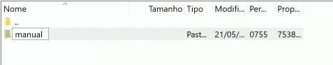
10º Acesse: www.cursoemvideo.com/cursowp/manual/ para poder ter o primerio acesso ao seu painel de controle do WordPress.
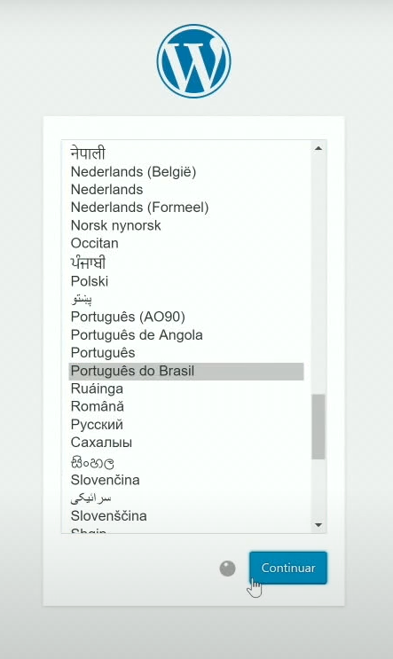
Configure normalmente...
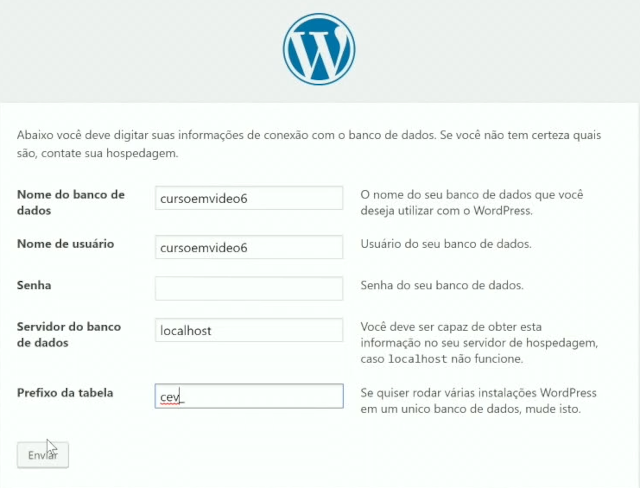
11º Agora você só precisa finalizar essas configurações
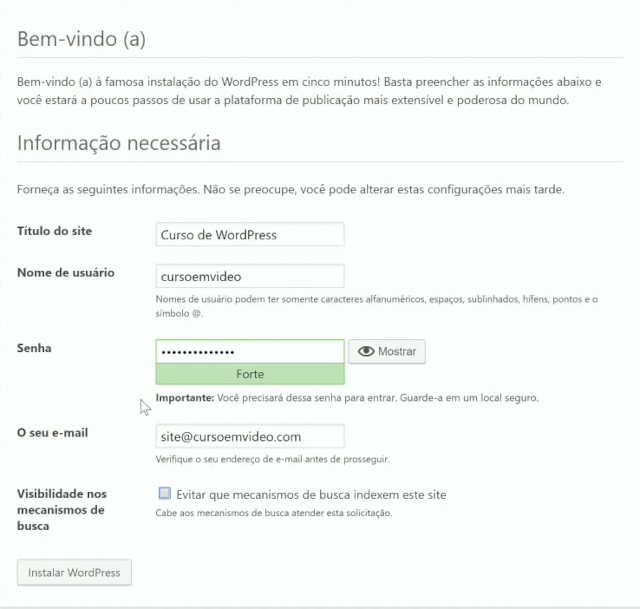
Escolha uma senha forte, e use um e-mail de respostas profissional e nunca o pessoal.
Agora acesse o site do wordpress usando seu usuário e senha
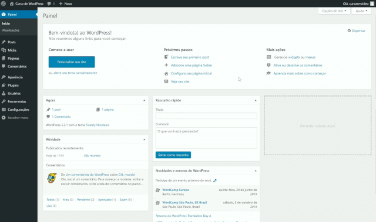
Outras alterações sugeridas pelo professor Ramiro Lobo, na aba configurações, lá em Endereço do WordPress(URL)...
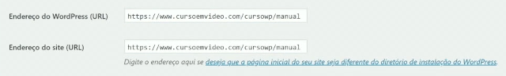
Altere de http para https. Atente-se que isso só funciona para servidor privado e não o local.
Salve as Alterações
Agora seu WordPress esta pronto apra receber configurações como no exemplo anterior em que configuramos no servidor local